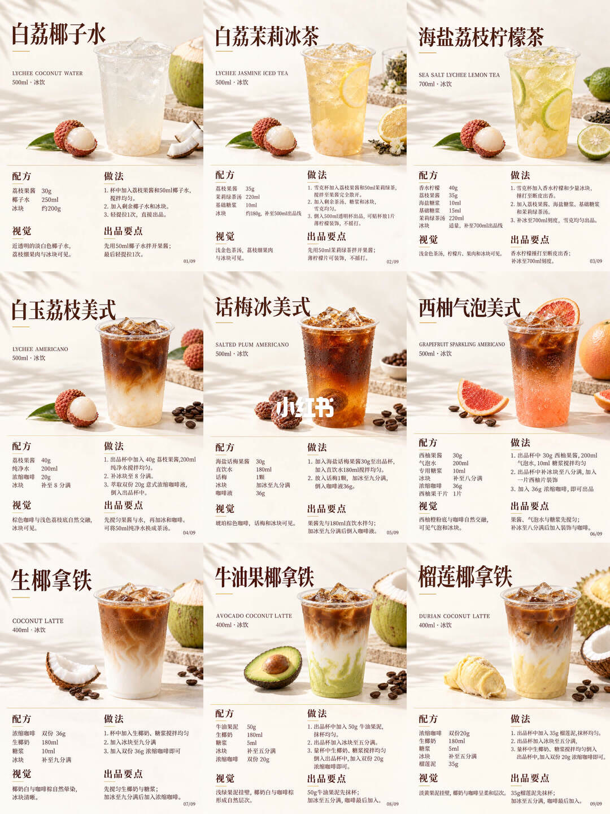
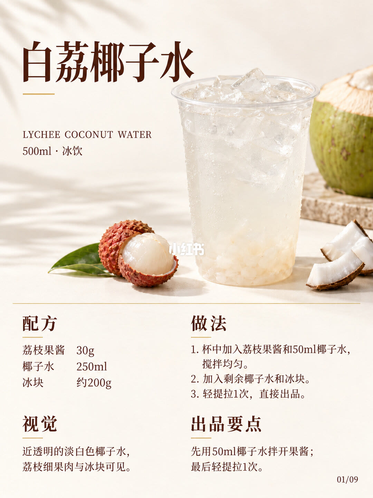
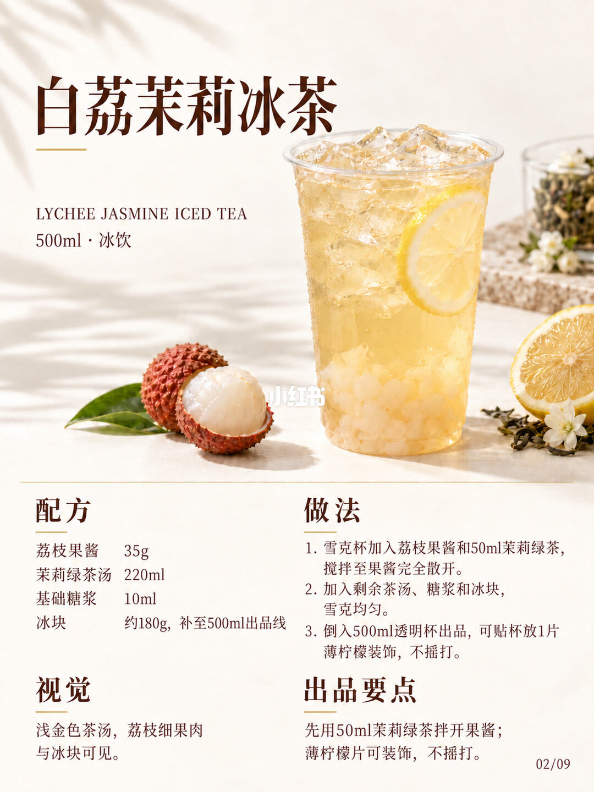
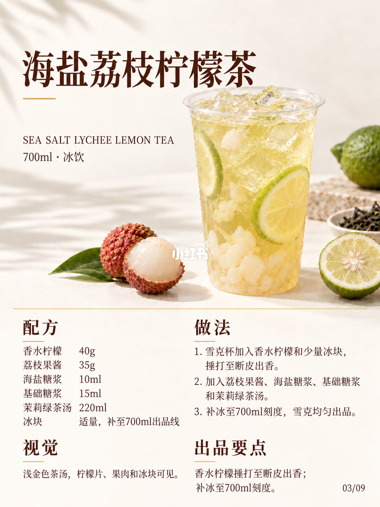
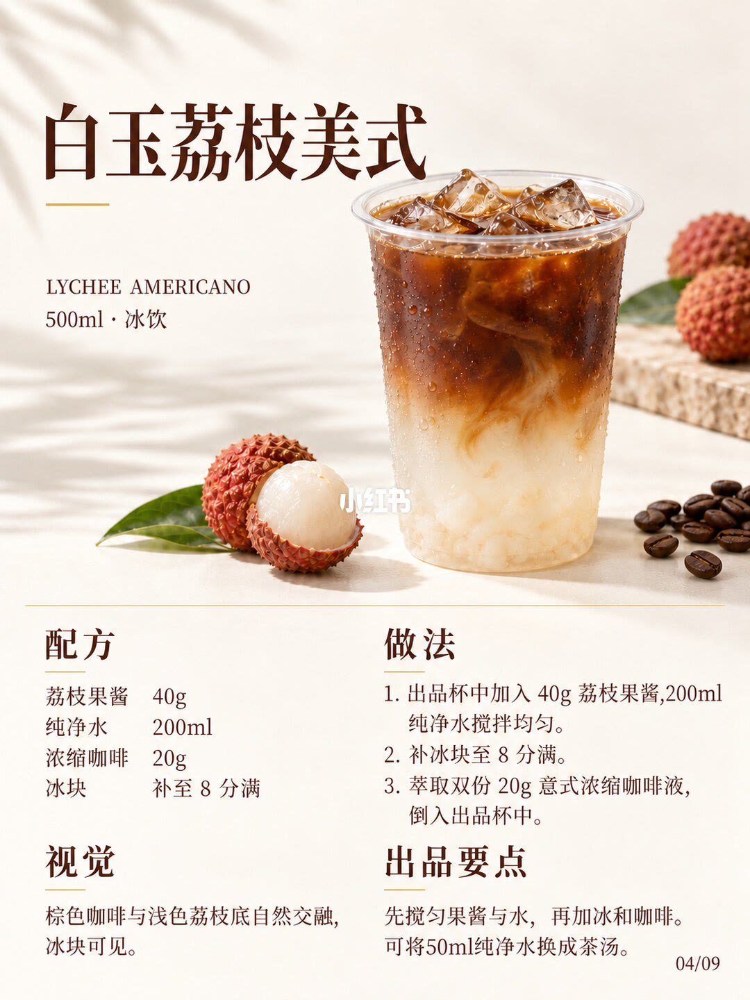
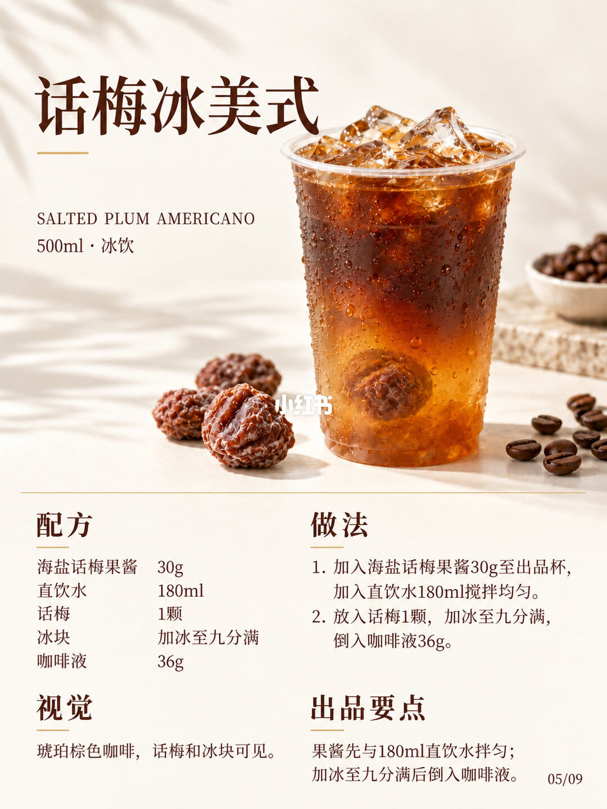
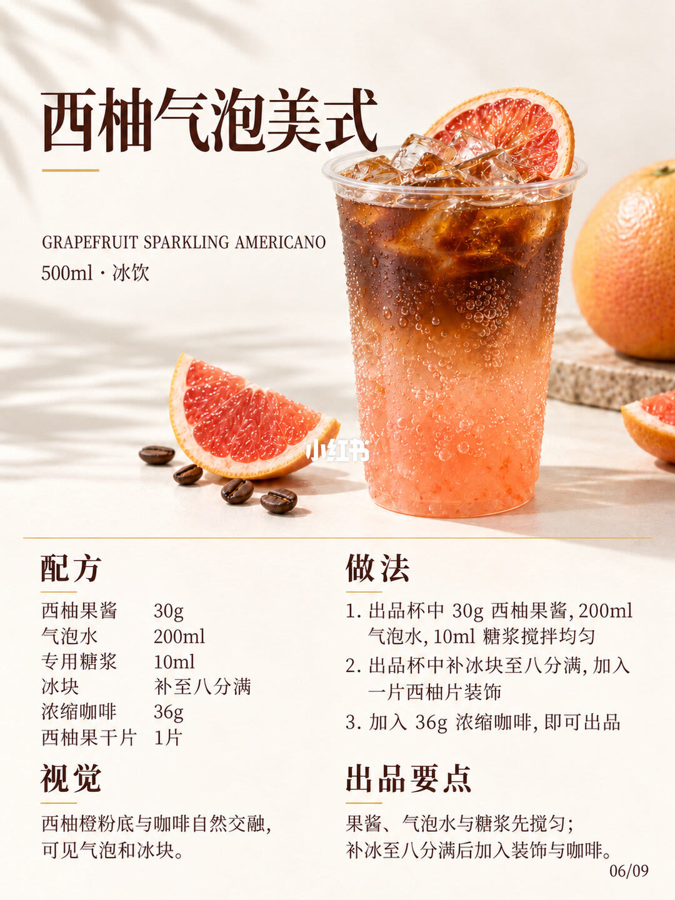
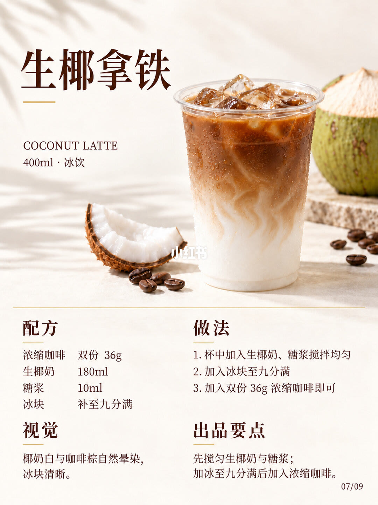
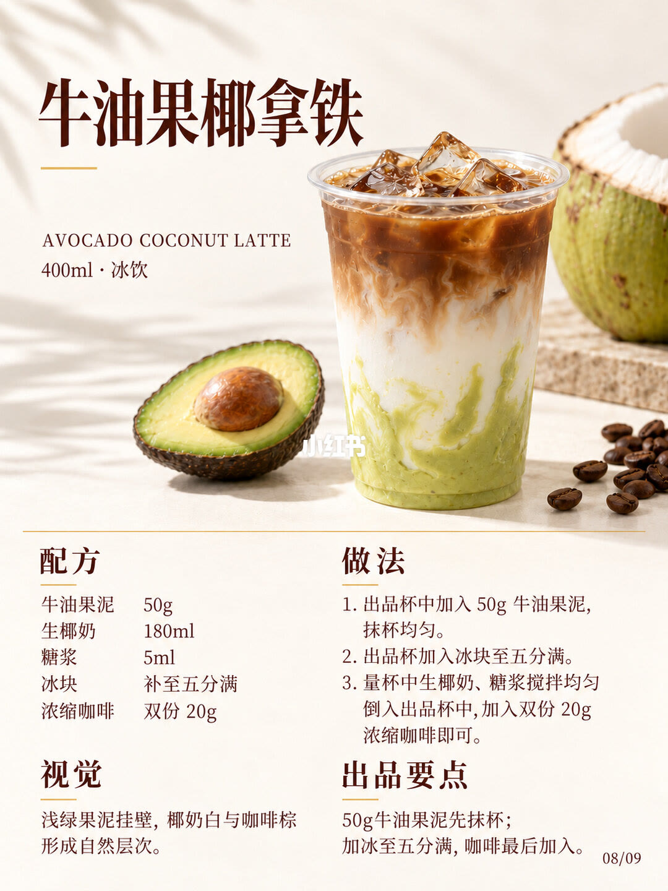
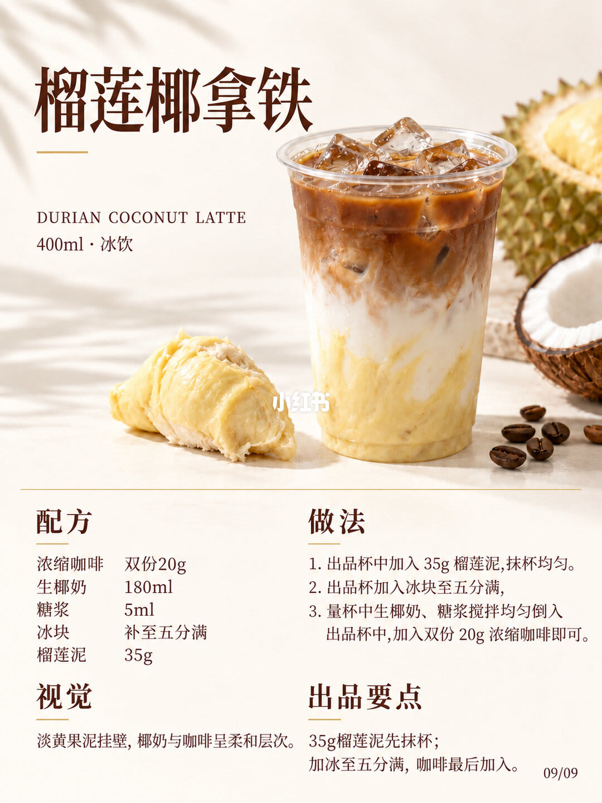

图文实录 · 小红书 · 甄茶笔记&大喜
9款果香特调｜配方与做法
标题写 9 款，单卡页脚是 01/09 到 09/09，实际饮品就是这 9 款。10 张图里第 1 张是九宫格总览，后面 9 张各展开一款，没有第 10 款。门店试杯时按单卡做：白荔椰子水是 500ml，先用 50ml 椰子水拌开 30g 果酱，再加剩余椰子水和约 200g 冰，轻提拉一次。两款茶都用 220ml 茉莉绿茶汤，但茉莉冰茶是 500ml、柠檬茶是 700ml。三款美式都是 500ml，浓缩或咖啡液最后倒。三款椰拿铁都是 400ml，生椰拿铁冰到九分满、浓缩印成双份 36g；牛油果和榴莲先抹杯，冰只到五分满，浓缩印成双份 20g。
1/10
九宫格把 9 款收在一页
这一页是 3×3 缩略，不是第 10 款。每格有中文名、英文名、容量和冰饮、成品照片，以及配方、做法、视觉、出品要点。格内页码按 01/09 到 09/09 排列。缩略字小，格内数字以第 2 页到第 10 页的单卡为准。
单卡确认的九款是：白荔椰子水、白荔茉莉冰茶、海盐荔枝柠檬茶、白玉荔枝美式、话梅冰美式、西柚气泡美式、生椰拿铁、牛油果椰拿铁、榴莲椰拿铁。全是冰饮。500ml 五格，700ml 一格，400ml 三格。

2/10
白荔椰子水，卡面 01/09
英文行 LYCHEE COCONUT WATER。规格 500ml · 冰饮。杯里是近透明的淡色液体、荔枝果肉和冰块。
配方：荔枝果酱 30g，椰子水 250ml，冰块约 200g。
做法：1. 杯中加入荔枝果酱和 50ml 椰子水，搅拌均匀。2. 加入剩余椰子水和冰块。3. 轻提拉 1 次，直接出品。剩余椰子水没有另印一个毫升数。
视觉：近透明的淡白色椰子水，荔枝细果肉与冰块可见。出品要点：先用 50ml 椰子水拌开果酱；最后轻提拉 1 次。这张没有糖浆，也没有写雪克。

3/10
白荔茉莉冰茶，卡面 02/09
英文行 LYCHEE JASMINE ICED TEA。规格 500ml · 冰饮。浅金色茶汤里能看到荔枝果肉和冰块。
配方：荔枝果酱 35g，茉莉绿茶汤 220ml，基础糖浆 10ml，冰块约 180g，补至 500ml 出品线。
做法：1. 雪克杯加入荔枝果酱和 50ml 茉莉绿茶，搅拌至果酱完全散开。2. 加入剩余茶汤、糖浆和冰块，雪克均匀。3. 倒入 500ml 透明杯出品，可贴杯放 1 片薄柠檬装饰，不摇打。剩余茶汤没有另印毫升数。
视觉：浅金色茶汤，荔枝细果肉与冰块可见。出品要点：先用 50ml 茉莉绿茶拌开果酱；薄柠檬片可装饰，不摇打。

4/10
海盐荔枝柠檬茶，卡面 03/09
英文行 SEA SALT LYCHEE LEMON TEA。规格 700ml · 冰饮。浅金色茶汤里能看到柠檬片、果肉和冰块。这是九款里唯一印成 700ml 的一杯。
配方：香水柠檬 40g，荔枝果酱 35g，海盐糖浆 10ml，基础糖浆 15ml，茉莉绿茶汤 220ml，冰块适量，补至 700ml 出品线。冰块没有克数。
做法：1. 雪克杯加入香水柠檬和少量冰块，捶打至断皮出香。2. 加入荔枝果酱、海盐糖浆、基础糖浆和茉莉绿茶汤。3. 补冰至 700ml 刻度，雪克均匀出品。少量冰块没有克数。
视觉：浅金色茶汤，柠檬片、果肉和冰块可见。出品要点：香水柠檬捶打至断皮出香；补冰至 700ml 刻度。

5/10
白玉荔枝美式，卡面 04/09
英文行 LYCHEE AMERICANO。规格 500ml · 冰饮。棕色咖啡和浅色荔枝底在杯里交融，冰块可见。
配方：荔枝果酱 40g，纯净水 200ml，浓缩咖啡 20g，冰块补至 8 分满。冰没有克数。
做法：1. 出品杯中加入 40g 荔枝果酱、200ml 纯净水搅拌均匀。2. 补冰块至 8 分满。3. 萃取双份 20g 意式浓缩咖啡液，倒入出品杯中。卡面把「双份」和「20g」印在一起，没有写成两份各多少克，也没有写成合计 40g。
视觉：棕色咖啡与浅色荔枝底自然交融，冰块可见。出品要点：先搅匀果酱与水，再加冰和咖啡。可将 50ml 纯净水换成茶汤。换成哪一种茶汤，卡面没有写。

6/10
话梅冰美式，卡面 05/09
英文行 SALTED PLUM AMERICANO。规格 500ml · 冰饮。琥珀棕色咖啡里能看到话梅和冰块。
配方：海盐话梅果酱 30g，直饮水 180ml，话梅 1 颗，冰块加冰至九分满，咖啡液 36g。冰没有克数。这里写的是直饮水，不是纯净水，也不是椰子水。
做法：1. 加入海盐话梅果酱 30g 至出品杯，加入直饮水 180ml 搅拌均匀。2. 放入话梅 1 颗，加冰至九分满，倒入咖啡液 36g。
视觉：琥珀棕色咖啡，话梅和冰块可见。出品要点：果酱先与 180ml 直饮水拌匀；加冰至九分满后倒入咖啡液。这张没有糖浆。

7/10
西柚气泡美式，卡面 06/09
英文行 GRAPEFRUIT SPARKLING AMERICANO。规格 500ml · 冰饮。西柚橙粉底和咖啡交融，能看到气泡和冰块。
配方：西柚果酱 30g，气泡水 200ml，专用糖浆 10ml，冰块补至八分满，浓缩咖啡 36g，西柚果干片 1 片。冰没有克数。
做法：1. 出品杯中 30g 西柚果酱、200ml 气泡水、10ml 糖浆搅拌均匀。2. 出品杯中补冰块至八分满，加入一片西柚片装饰。3. 加入 36g 浓缩咖啡，即可出品。配方栏写的是西柚果干片，做法第 2 步写的是西柚片，卡面没有说明这两处是不是同一片。
视觉：西柚橙粉底与咖啡自然交融，可见气泡和冰块。出品要点：果酱、气泡水与糖浆先搅匀；补冰至八分满后加入装饰与咖啡。

8/10
生椰拿铁，卡面 07/09
英文行 COCONUT LATTE。规格 400ml · 冰饮。椰奶白色和咖啡棕色在杯里晕开，冰块清晰。这张没有果酱，也没有果泥抹杯。
配方：浓缩咖啡双份 36g，生椰奶 180ml，糖浆 10ml，冰块补至九分满。冰没有克数。「双份」和「36g」印在同一格，没有写成两份各 36g，也没有写成合计 72g。
做法：1. 杯中加入生椰奶、糖浆搅拌均匀。2. 加入冰块至九分满。3. 加入双份 36g 浓缩咖啡即可。搅奶写在出品杯里，没有写量杯。
视觉：椰奶白与咖啡棕自然晕染，冰块清晰。出品要点：先搅匀生椰奶与糖浆；加冰至九分满后加入浓缩咖啡。

9/10
牛油果椰拿铁，卡面 08/09
英文行 AVOCADO COCONUT LATTE。规格 400ml · 冰饮。浅绿色果泥挂在杯壁，椰奶和咖啡形成层次。
配方：牛油果泥 50g，生椰奶 180ml，糖浆 5ml，冰块补至五分满，浓缩咖啡双份 20g。冰没有克数。糖浆是 5ml，不是生椰拿铁那张的 10ml。
做法：1. 出品杯中加入 50g 牛油果泥，抹杯均匀。2. 出品杯加入冰块至五分满。3. 量杯中生椰奶、糖浆搅拌均匀倒入出品杯中，加入双份 20g 浓缩咖啡即可。「双份 20g」没有印成合计 40g。
视觉：浅绿果泥挂壁，椰奶白与咖啡棕形成自然层次。出品要点：50g 牛油果泥先抹杯；加冰至五分满，咖啡最后加入。

10/10
榴莲椰拿铁，卡面 09/09
英文行 DURIAN COCONUT LATTE。规格 400ml · 冰饮。淡黄色果泥挂壁，椰奶和咖啡呈柔和层次。
配方：浓缩咖啡双份 20g，生椰奶 180ml，糖浆 5ml，冰块补至五分满，榴莲泥 35g。冰没有克数。
做法：1. 出品杯中加入 35g 榴莲泥，抹杯均匀。2. 出品杯加入冰块至五分满。3. 量杯中生椰奶、糖浆搅拌均匀倒入出品杯中，加入双份 20g 浓缩咖啡即可。
视觉：淡黄果泥挂壁，椰奶与咖啡呈柔和层次。出品要点：35g 榴莲泥先抹杯；加冰至五分满，咖啡最后加入。步骤和牛油果椰拿铁相同，果泥从 50g 换成 35g。

汇总
九款是四组骨架，换果之前先对杯规和最后入杯的液体
结论
图上是 9 款，不是 10 款。白荔椰子水（实录 2/10）是 500ml：果酱 30g，先用 50ml 椰子水拌开，椰子水一共 250ml，冰约 200g，轻提拉 1 次。白荔茉莉冰茶（3/10）是 500ml：果酱 35g、茉莉绿茶汤 220ml、基础糖浆 10ml，冰约 180g 并补到 500ml 出品线，薄柠檬不摇打。海盐荔枝柠檬茶（4/10）是 700ml：香水柠檬 40g 先捶到断皮，果酱 35g，海盐糖浆 10ml 加基础糖浆 15ml，茶汤仍是 220ml，冰适量并补到 700ml 刻度。白玉荔枝美式（5/10）是 500ml：果酱 40g、纯净水 200ml，冰到 8 分满，浓缩印成双份 20g。话梅冰美式（6/10）是 500ml：果酱 30g、直饮水 180ml、话梅 1 颗，冰到九分满，咖啡液 36g。西柚气泡美式（7/10）是 500ml：果酱 30g、气泡水 200ml、专用糖浆 10ml，冰到八分满，果干片 1 片，浓缩 36g。生椰拿铁（8/10）是 400ml：生椰奶 180ml、糖浆 10ml，冰到九分满，浓缩印成双份 36g。牛油果椰拿铁（9/10）和榴莲椰拿铁（10/10）都是 400ml、生椰奶 180ml、糖浆 5ml、冰到五分满、浓缩印成双份 20g，果泥分别是 50g 和 35g，都要先抹杯。
支撑页
总览在 1/10。白荔椰子水在 2/10。白荔茉莉冰茶在 3/10。海盐荔枝柠檬茶在 4/10。白玉荔枝美式在 5/10。话梅冰美式在 6/10。西柚气泡美式在 7/10。生椰拿铁在 8/10。牛油果椰拿铁在 9/10。榴莲椰拿铁在 10/10。
边界
茶汤怎么泡、浓缩怎么萃、椰子水是鲜椰还是包装、基础糖浆和专用糖浆差在哪，十页都没印。冰块只有椰子水印了约 200g、茉莉冰茶印了约 180g；柠檬茶写适量，美式和拿铁只写几分满，没有克数，所以液体毫升加起来对不上 400ml、500ml 或 700ml 的杯规。双份只和 20g 或 36g 印在同一格，没有写成两份各多少克。白玉荔枝美式可以把 50ml 纯净水换成茶汤，但没写茶的种类。西柚配方栏是果干片，做法写西柚片，两处是否同一片无法从字面确认。全是冰饮，没有热饮温度。